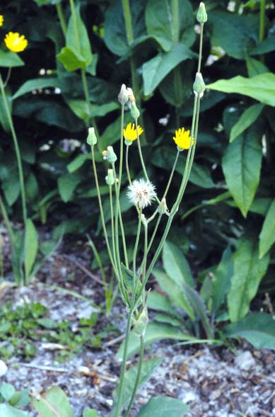
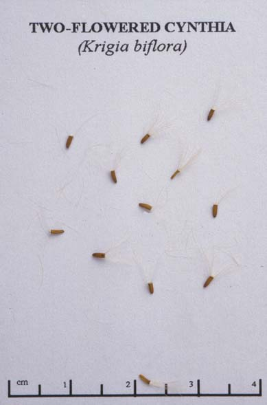

Krigia biflora
Family: Asteraceae
False Dandelion
Swink/Wilhelm #9

FLOWERING: Mid-May to Early July
SEED TIMING: June to Mid-July
HABITAT: Open woods - Savanna
DIAGNOSTIC FEATURES: 8 to 21 inches high. Yellow-orange Dandelion-like flower heads top a smooth forking stem. 1 or 2 small, thin, light-green, oval leaves clasp stem below fork. Basal leaves are paddle-shaped.
TO PICK: Pick entire head when flower/seed head turns to fluff.
Forbs
-
Actaea pachypoda / Family: Ranunculaceae
White Baneberry/Doll's Eye, Swink/Wilhelm #8 -
Agastache nepetoides / Family: Lamiaceae
Yellow Giant Hyssop, Swink/Wilhelm #5 -
Allium cernuum / Family: Liliaceae
Nodding Wild Onion, Swink/Wilhelm #7 -
Amphicarpaea bracteata / Family:
Fabaceae
Upland Hog Peanut, Swink/Wilhelm #5 -
Anemonella thalictroides / Family:
Ranunculaceae
Rue Anemone, Swink/Wilhelm #7 -
Antennaria neglecta / Family: Asteraceae
Wooly Cat's Foot, Swink/Wilhelm #3 -
Antennaria parlinii / Family: Asteraceae
Green Everlasting, Swink/Wilhelm #3 -
Antennaria parlinii / Family: Asteraceae
Green Everlasting, Swink/Wilhelm #3 -
Arisaema triphyllum / Family: Araceae
Jack-in-the-Pulpit, Swink/Wilhelm #5 -
Arnoglossum atriplicifolium / Family:
Asteraceae
Pale Indian Plantain, Swink/Wilhelm #8 -
Asclepias incarnata / Family:
Asclepiadaceae
Swamp Milkweed, Swink/Wilhelm #3 -
Asclepias tuberosa / Family:
Asclepiadaceae
Butterfly Weed, Swink/Wilhelm #8 -
Baptisia lactea / Family: Fabaceae
White Wild Indigo, Swink/Wilhelm #8 -
Baptisia leucophaea / Family: Fabaceae
Cream Wild Indigo, Swink/Wilhelm #10 -
Boltonia asteroides / Family: Asteraceae
False Aster, Swink/Wilhelm #8 -
Camassia scilloides / Family: Liliaceae
Wild Hyacinth, Swink/Wilhelm #7 -
Cardamine douglassii / Family:
Brassicaceae
Purple Spring Cress, Swink/Wilhelm #7 -
Ceanothus americanus / Family:
Rhamnaceae
New Jersey Tea, Swink/Wilhelm #6 -
Coreopsis tripteris / Family: Asteraceae
Tall Coreopsis, Swink/Wilhelm #5 -
Dalea candida / Family: Fabaceae
White Prairie Clover, Swink/Wilhelm #10 -
Dalea purpurea / Family: Fabaceae
Purple Prairie Clover, Swink/Wilhelm #9 -
Dasistoma macrophylla / Family:
Orobanchaceae
Mullein Foxglove, Swink/Wilhelm #8 -
Dentaria laciniata / Family:
Brassicaceae
Cut-Leaved Toothwort, Swink/Wilhelm #5 -
Desmodium canadense / Family: Fabaceae
Showy Tick Trefoil, Swink/Wilhelm #4 -
Desmodium paniculatum / Family: Fabaceae
Panicled Tick Trefoil, Swink/Wilhelm #6 -
Dodecatheon meadia / Family: Primulaceae
Shooting Star, Swink/Wilhelm #6 -
Drymocallis arguta / Family: Rosaceae
Prairie Cinquefoil, Swink/Wilhelm #10 -
Enemion biternatum / Family:
Ranunculaceae
False Rue Anemone, Swink/Wilhelm #9 -
Eryngium yuccifolium / Family: Apiaceae
Rattlesnake Master, Swink/Wilhelm #9 -
Euonymus obovatus / Family: Celastraceae
Running Strawberry Bush, Swink/Wilhelm #8 -
Gentiana andrewsii / Family:
Gentianaceae
Bottle Gentian, Swink/Wilhelm #9 -
Gentiana puberulenta / Family:
Gentianaceae
Downy Gentian, Swink/Wilhelm #10 -
Gentianopsis crinita / Family:
Gentianaceae
Fringed Gentian, Swink/Wilhelm #9 -
Hydrophyllum virginianum / Family:
Hydrophyllaceae
Virginia Waterleaf, Swink/Wilhelm #5 -
Hypericum ascyron / Family: Hypericaceae
Giant St. John's Wort, Swink/Wilhelm #10 -
Hypoxis hirsuta / Family: Amaryllidaceae
Yellow Star Grass, Swink/Wilhelm #8 -
Krigia biflora / Family: Asteraceae
False Dandelion, Swink/Wilhelm #9 -
Lespedeza capitata / Family: Fabaceae
Round-Headed Bush Clover, Swink/Wilhelm #4 -
Liatris aspera / Family: Asteraceae
Rough Blazing Star, Swink/Wilhelm #8 -
Liatris spicata / Family: Asteraceae
Marsh Blazing Star, Swink/Wilhelm #7 -
Lithospermum canescens / Family:
Boraginaceae
Hoary Puccoon, Swink/Wilhelm #8 -
Lonicera reticulata / Family:
Caprifoliaceae
Yellow Honeysuckle, Swink/Wilhelm #8 -
Moehringia lateriflora / Family:
Caryophyllaceae
Wood Sandwort, Swink/Wilhelm #8 -
Monarda fistulosa / Family: Lamiaceae
Wild Bergamot, Swink/Wilhelm #4 -
Oligoneuron rigidum / Family: Asteraceae
Stiff Goldenrod, Swink/Wilhelm #3 -
Osmorhiza claytonii / Family: Apiaceae
Hairy Sweet Cicely, Swink/Wilhelm #3 -
Oxalis violacea / Family: Oxalidaceae
Violet Wood Sorrel, Swink/Wilhelm #8 -
Parthenium integrifolium / Family:
Asteraceae
Wild Quinine, Swink/Wilhelm #8 -
Pedicularis canadensis / Family:
Scrophulariaceae
Wood Betony/Lousewort, Swink/Wilhelm #9 -
Penstemon calycosus / Family:
Scrophulariaceae
Smooth Beard Tongue, Swink/Wilhelm #5 -
Phlox divaricata / Family: Polemoniaceae
Woodland Phlox, Swink/Wilhelm #5 -
Prenanthes racemosa / Family: Asteraceae
Glaucous White Lettuce, Swink/Wilhelm #10 -
Ratibida pinnata / Family: Asteraceae
Yellow Coneflower, Swink/Wilhelm #4 -
Rudbeckia subtomentosa / Family:
Asteraceae
Sweet Black-Eyed Susan, Swink/Wilhelm #8 -
Sanguinaria canadensis / Family:
Papaveraceae
Bloodroot, Swink/Wilhelm #5 -
Silene stellata / Family:
Caryophyllaceae
Starry Campion, Swink/Wilhelm #6 -
Silphium integrifolium / Family:
Asteraceae
Rosin Weed, Swink/Wilhelm #5 -
Silphium laciniatum / Family: Asteraceae
Compass Plant, Swink/Wilhelm #5 -
Sisyrinchium albidum / Family: Iridaceae
Blue-Eyed Grass, Swink/Wilhelm #6 -
Solidago juncea / Family: Asteraceae
Early Goldenrod, Swink/Wilhelm #3 -
Solidago nemoralis / Family: Asteraceae
Old-Field Goldenrod, Swink/Wilhelm #3 -
Symphyotrichum laeve / Family:
Asteraceae
Smooth Blue Aster, Swink/Wilhelm #9 -
Taenidia integerrima / Family: Apiaceae
Yellow Pimpernel, Swink/Wilhelm #10 -
Thalictrum dioicum / Family:
Ranunculaceae
Early Meadow Rue, Swink/Wilhelm #7 -
Tradescantia ohiensis / Family:
Commelinaceae
Common Spiderwort, Swink/Wilhelm #3 -
Trillium grandiflorum / Family:
Liliaceae
Large Flowered Trillium, Swink/Wilhelm #9 -
Triosteum perfoliatum / Family:
Caprifoliaceae
Late Horse Gentian/Wild Coffee, Swink/Wilhelm #4 -
Vernonia fasciculata / Family:
Asteraceae
Common Ironweed, Swink/Wilhelm #8 -
Veronicastrum virginicum / Family:
Scrophulariaceae
Culver's Root, Swink/Wilhelm #8 -
Viola pedatifida / Family: Violaceae
Prairie Violet, Swink/Wilhelm #9
Grasses and Sedges
-
Andropogon gerardii / Family: Poaceae
Big Bluestem, Swink/Wilhelm #5 -
Bromus kalmii / Family: Poaceae
Prairie Brome, Swink/Wilhelm #10 -
Bromus nottowayanus / Family: Poaceae
Woodland Brome, Swink/Wilhelm #5 -
Carex davisii / Family: Cyperaceae
Awned Graceful Sedge, Swink/Wilhelm #4 -
Carex grayi / Family: Cyperaceae
Common Bur Sedge, Swink/Wilhelm #7 -
Carex pensylvanica / Family: Cyperaceae
Common Oak Sedge, Swink/Wilhelm #5 -
Cinna arundinacea / Family: Poaceae
Common Wood Reed, Swink/Wilhelm #5 -
Dicanthelium latifolium / Family:
Poaceae
Broad-Leaved Panic Grass, Swink/Wilhelm #8 -
Elymus canadensis / Family: Poaceae
Canada/Nodding Wild Rye, Swink/Wilhelm #4 -
Elymus villosus / Family: Poaceae
Silky Wild Rye, Swink/Wilhelm #5 -
Elymus virginicus / Family: Poaceae
Virginia Rye, Swink/Wilhelm #3 -
Hystrix patula / Family: Poaceae
Bottlebrush Grass, Swink/Wilhelm #5 -
Panicum virgatum / Family: Poaceae
Switch Grass, Swink/Wilhelm #3 -
Schizachyrium scoparium / Family:
Poaceae
Little Bluestem, Swink/Wilhelm #5 -
Sorghastrum nutans / Family: Poaceae
Indian Grass, Swink/Wilhelm #5 -
Spartina pectinata / Family: Poaceae
Prairie Cord Grass, Swink/Wilhelm #4 -
Sporobolus heterolepis / Family: Poaceae
Prairie/Northern Dropseed, Swink/Wilhelm #10